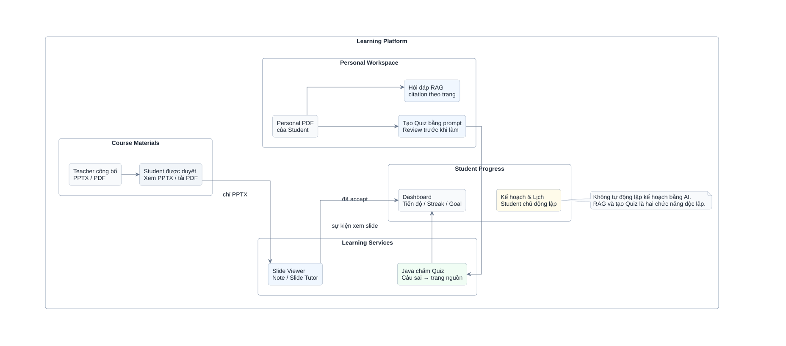

Hình 1.1. Phạm vi chức năng và các nhánh học tập của StudyFlow.
Chèn vào Chương 1 tại đoạn dẫn cùng số hình. Hình dưới thể hiện phạm vi studyflow. Khổ ngang vì hình dài.

Hình 1.1. Phạm vi chức năng và các nhánh học tập của StudyFlow.Hình cho thấy Course Material PDF và Personal PDF đi theo hai nhánh quyền riêng. Student Tutor chỉ dùng PDF lớp đã công bố; Personal Document Assistant dùng một Agent cho hỏi đáp, tóm tắt và tạo Quiz. Java ghi nhận sự kiện học tập và chấm Quiz, còn sinh viên chủ động quản lý Kế hoạch & Lịch. Đây là sơ đồ phạm vi nghiệp vụ, không phải trình tự API hoặc minh chứng implementation đã hoàn thành.
SVGPNGNguồn / chú giải